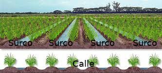
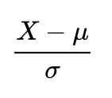
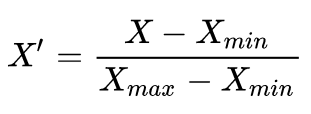

Universidad Nacional Experimental del Táchira
Vicerrectorado Académico
Departamento de Ingeniería en Informática
Proyecto Especial de Grado
Paquete en lenguaje R para la clasificación de tubérculos de papa criolla (Solanum phureja) para diferentes densidades de siembra empleando redes neuronales probabilı́sticas.
Autor: Jesús Escalante. - jesusd.escalante@unet.edu.ve
Tutor: Dra. Rossana Timaure - rttg@unet.edu.ve
Julio, 2019.
Preliminares
Planteamiento y formulación del problema
-
Papa criolla (Solanum phureja).
Intereses comerciales.
Manipulación de variables, pero la densidad de siembra es espacial.

Planteamiento y formulación del problema
Lenguaje de programación R.
- Portable.
- Multiplataforma.
- Orientado a computación estadística.
Objetivo General
Desarrollar un paquete en lenguaje R que permita la clasificación de tubérculos de papa criolla (Solanum phureja) para diferentes densidades de siembra empleando redes neuronales probabilı́sticas.
Objetivos Específicos
-
Estudiar la parametrización de la densidad de siembra como parámetro de entrada al clasificador.
-
Diseñar los algoritmos para las funciones principales que permitan el entrenamiento de una red neuronal probabilı́stica para la clasificación de tubérculos de papa criolla (Solanum phureja) para diferentes densidades de siembra.
Objetivos Específicos
-
Implementar las funciones para la clasificación de tubérculos de papa criolla para diferentes densidades de siembra, basadas en los algorı́tmos desarrollados.
-
Realizar la pruebas del paquete desarrollado bajo diferente escenarios.
Aportes de la investigación
-
Nueva herramienta para realizar clasificaciones basadas en redes neuronales probabilísticas, midiendo su rendimiento.
-
Arquitectura de siembra óptima.
-
Análisis de variables espaciales sin supuestos estadísticos.
Fundamentos Teóricos
Antecedentes
- Cálculo de la tasa de germinación utilizando un clasificador basado en redes neuronales a partir de imágenes de plántulas previamente segmentadas. Mayabiro E. - 2011.
- Un algoritmo de reconocimiento de hojas para la clasificación de plantas utilizando una red neuronal probabilística. Stephen G. - 2013.
- Modelado del Calibre de tubérculos de papa Solanum phureja bajo diferentes densidades de siembra mediante regresión binomial negativa cero-inflada. Bernal N. - 2017.
Bases Teóricas
- Redes neuronales artificiales.
Bases Teóricas
- Redes neuronales probabilı́sticas.
Fundamentos Metodológicos
- Enfoque de la investigación: Proyectivo.
- Diseño de la investigación: Secuencial algorítmico.
Metodología.
-
Desarrollo del paquete en R.
- Creación del esqueleto del paquete
- Diseño de las soluciones algorı́tmicas
- Codificación de los algoritmos
- Registrar el método para el envı́o y uso de funciones
- Diseñar y entrenar la red neuronal probabilı́stica
- Pruebas unitarias de las funciones
- Implementar y realizar pruebas de clasificación
- Chequear la carga del paquete
- Construcción del método de distribución del paquete
Desarrollo
Creación del esqueleto del paquete.
Diseño de las soluciones algorı́tmicas.
Diseño de las soluciones algorı́tmicas para el entrenamiento de una red neuronal probabilı́stica que permita la clasificación de tubérculos de papa.
- Entrenamiento y clasificación (trainNeuralNet).
- Evaluación (evaluate).
- Estandarización (standardize).
Entrenamiento y clasificación (trainNeuralNet).
- Dependencia del paquete pnn
Ajustes realizados - paquete pnn.
- Manejo de versiones en github.
- Manejo de datos faltantes (NA) mal manejado.
Evaluación (evaluate).
- Dependencia del paquete pROC
Estandarización (standardize).
 Codificación de los algoritmos.
Entrenamiento y clasificación (trainNeuralNet).
Evaluación (evaluate).

Estandarización (standardize).
Chequeo del paquete, método de distribución y registro del método de envı́o.
Pruebas funcionales del paquete.
- Algoritmo de clasificación.
- Gráfico de nubes de puntos.
- Curvas características operativas del receptor.
Prueba funcional con datos de papa estandarizados
Prueba funcional con datos de papa no estandarizados
Prueba funcional con muestra generada a partir del comportamiento de los datos de papa. (Distribución asimétrica positiva)
Prueba funcional con muestra de datos normales generados aleatoriamente.
Conclusiones y Recomendaciones
- Herramienta parametrizable y escalable de código abierto, que permite realizar clasificaciones multiclase de cualquier tipo de datos.
- Los datos de papa que se tienen como población para las pruebas no son buenas entradas para el clasificador.
- Evaluar el desarrollo de un ambiente para gráficos más interactivo con el usuario.